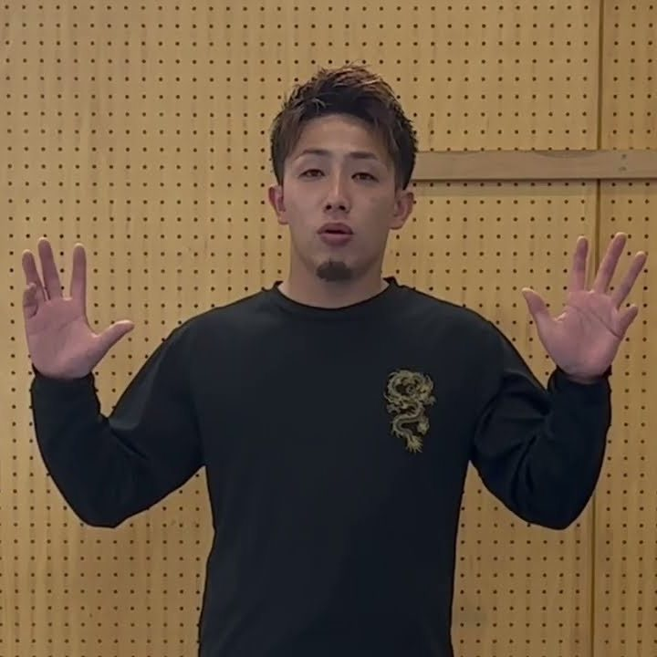
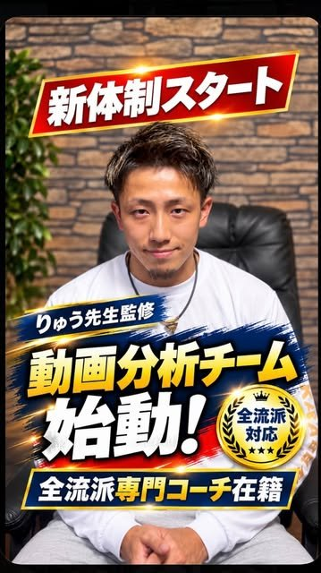
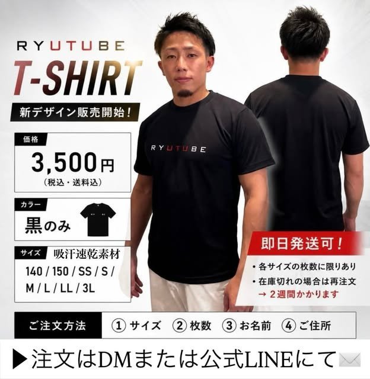
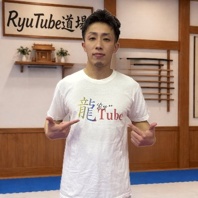

動画分析Video analysis
全流派対応All four major styles
練習や試合の動画を送るだけ。形のクセや直すべきポイントを、具体的にフィードバックします。
Just send a video of your practice or a match. You'll get clear feedback on your habits and exactly what to fix.
詳しく見るHow it works空手の『形』コーチ・りゅう先生Karate kata coach · Ryu Sensei
YouTube「RyuTube道場」のりゅう先生が、動画分析・プライベートレッスン・道場セミナーで、あなたの形を直接サポートします。
Ryu Sensei of the RyuTube Dojo YouTube channel works with you directly through video analysis, private lessons and dojo seminars.

SERVICES
YouTubeだけでは伝えきれない、あなただけの課題に向き合います。
Videos can only go so far. These services focus on you and your kata.
全流派対応All four major styles
練習や試合の動画を送るだけ。形のクセや直すべきポイントを、具体的にフィードバックします。
Just send a video of your practice or a match. You'll get clear feedback on your habits and exactly what to fix.
詳しく見るHow it works対面・オンラインIn person or online
マンツーマンで、あなたの目標に合わせて指導します。グループレッスンのご相談も受け付けています。
One-on-one coaching built around your goals. Group lessons are available too, just ask.
空き状況をLINEで確認Check availability on LINE出張指導I come to your dojo
道場・クラブへの出張セミナーや出張指導を承っています。形のポイントを、参加者みんなで学べます。
Invite Ryu Sensei to run a seminar or a coaching session at your dojo or club, so your whole team can learn together.
セミナーの様子を見るWatch a past seminar
VIDEO ANALYSIS
剛柔流・糸東流・松濤館流・和道流の4流派に対応。流派に関係なく、すべての選手の上達をサポートします。
Now covering Goju-ryu, Shito-ryu, Shotokan and Wado-ryu, so every athlete can get help, whatever their style.
それぞれの流派で競技経験を持つコーチが、りゅう先生の分析基準・指導方針をもとに動画を分析します。コーチ陣の競技経験：
Each video is analyzed by a coach with competition experience in that style, using Ryu Sensei's own standards and coaching approach. Our coaches have competed at:
料金はLINEでご案内しています。
Ask on LINE for current prices.
ABOUT
糸東流を中心に、空手の『形』を専門に指導しています。子どもの頃から空手を続け、2019年にYouTubeチャンネル「RyuTube道場」を開設しました。
試合で勝つための形のポイント、初心者から上級者まで役立つ基本・応用の練習方法、体幹やスピード・パワーアップのトレーニングを、YouTube・Instagram・TikTokで発信しています。
Ryu Sensei specializes in karate kata, mainly Shito-ryu. He has trained since he was a child, and started the RyuTube Dojo YouTube channel in 2019.
On YouTube, Instagram and TikTok he shares the kata details that win tournaments, basic to advanced drills for every level, and core, speed and power training.
RYUTUBE
クリックするとこのページで再生できます。
Click a video to play it right here.
SHOP

¥3,500税込・送料込tax and shipping included
シンプルだからカッコいい。吸汗速乾のスポーツニット生地で、空手やトレーニングはもちろん、普段着にも使える一枚です。
Simple and sharp. Quick-dry sports knit that works for karate, training and everyday wear.
在庫があれば即日発送。在庫切れのサイズは再注文となり、お届けまで約2週間かかります。
Ships the same day when in stock. Sold-out sizes are reordered and take about 2 weeks to arrive.
FAQ
はい。動画分析は剛柔流・糸東流・松濤館流・和道流の4流派に対応しており、それぞれの流派の専門コーチが担当します。
Yes. Video analysis covers Goju-ryu, Shito-ryu, Shotokan and Wado-ryu, each with a specialist coach for that style.
はい。プライベートレッスンは対面・オンラインのどちらにも対応しています。
Yes. Private lessons are available in person or online.
サービスやコースによって異なります。公式LINEでご案内していますので、お気軽にお問い合わせください。
It depends on the service and course. Send a message on LINE and you'll get current prices.
公式LINEに登録すると、レッスンの空き状況の確認と予約ができます。
Add the official LINE account to check open lesson times and book.
はい。道場・クラブ向けのセミナーや出張指導を承っています。LINEまたはInstagramのDMでご相談ください。
Yes. He runs seminars and coaching sessions for dojos and clubs. Get in touch on LINE or Instagram DM.
CONTACT

レッスンの予約、動画分析、セミナーのご依頼は、公式LINEが一番スムーズです。InstagramのDMでも受け付けています。
For lessons, video analysis or seminars, LINE is the quickest way to reach Ryu Sensei. Instagram DMs work too.
スマホで読み取って友だち追加
LINE ID：@523loljt
Scan with your phone to add on LINE
LINE ID: @523loljt